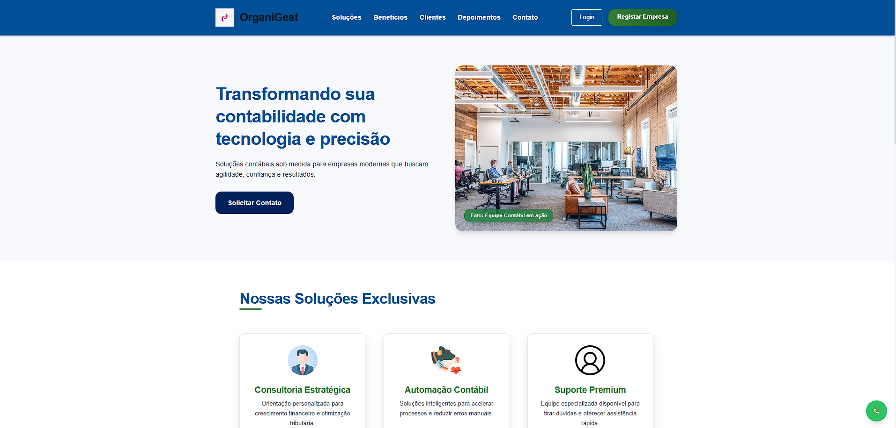
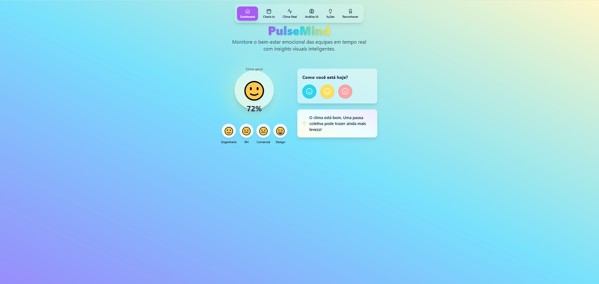

Projetos em Destaque
De ideias abstratas a projetos bem-sucedidos, aqui estão alguns dos meus trabalhos mais recentes
-

Sistema de Gestão Inteligente de Inventário
Um sistema web completo e moderno para gestão de armazéns e controle de estoque, desenvolvido com foco em eficiência, automação e usabilidade. Projetado para empresas que buscam monitoramento em tempo real, inteligência analítica e controle preciso sobre operações logísticas.
Leia mais → -

OrganiGest
O OrganiGest é uma plataforma moderna e robusta desenvolvida para a gestão eficiente de escritórios de contabilidade. Com foco em produtividade, organização e comunicação, a aplicação oferece um ecossistema completo que centraliza as operações diárias de equipas contabilísticas, promovendo eficiência, transparência e escalabilidade.
Leia mais →
Objetivo Principal
Simplificar e otimizar a gestão administrativa de empresas de contabilidade por meio de ferramentas digitais inteligentes, com foco na centralização de informações, comunicação integrada, gestão de tarefas, e análise de desempenho em tempo real. -

PulseMind - Plataforma de Bem-Estar Corporativo
PulseMind é uma plataforma de bem-estar corporativo em tempo real que utiliza inteligência artificial para monitorar, analisar e promover um clima organizacional saudável. A solução é centrada em uma experiência leve, interativa e baseada em dados, com foco na prevenção de burnout, aumento da motivação e fortalecimento da cultura de reconhecimento.
Leia mais →